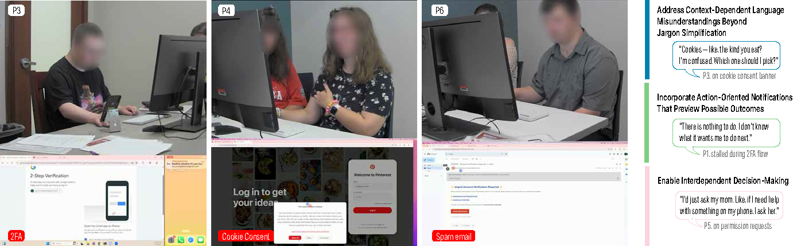

Research Project · Published · ASSETS 2026
"I'm trying not to get hacked:" How Adults with IDD Navigate Security and Privacy Notifications

Abstract
Security and privacy notifications—such as login alerts, spam e-mail warnings, and cookie consent requests—play a critical role in shaping how users respond to digital risks. Yet most notifications overlook cognitive accessibility, limiting their effectiveness for people with intellectual and developmental disabilities (IDD). In this work, we investigate how adults with IDD perceive and respond to common security and privacy notifications across mobile and web applications. Through a user study involving six adults with IDD, we identified key factors that influenced their understanding and decision-making, including reliance on visual or symbolic cues, simplification of complex terms, interdependence with support persons, and familiarity with everyday functions. We further highlight interaction challenges, including misunderstandings of notification purpose and flow, misinterpretations of language and terminology, and misalignments of action-outcome expectations. Our results contribute design recommendations to advance usable privacy and security, supporting safer and more autonomous digital engagement for users with IDD.Security and privacy warnings, like login alerts, spam email notices, and cookie pop-ups, are meant to help people stay safe online. But most are not designed with accessibility in mind, which can make them hard to understand for some people with intellectual and developmental disabilities (IDD). We studied how six adults with IDD responded to these kinds of warnings on phones and websites. We found they relied on visual cues, got help from trusted people, and used their familiarity with everyday apps. We also found that some warnings were hard to understand: it was not always clear what the warning was for, what the words meant, or what would happen when pressing a button. Our findings offer design ideas to make these warnings clearer and safer for everyone.
Design Implications
1. Address Context-Dependent Language Misunderstandings Beyond Jargon Simplification1. Make Language Match the Situation, Not Just Avoid Hard Words
Participants' misunderstandings — such as equating "cookies" with food or interpreting "deny" as "log out" — did not arise from vocabulary alone, but from contextual blending between the task, prior experience, and the interface. Simplifying terminology is necessary but insufficient. Designers should treat clarity as context calibration: explicitly identifying what is being acted upon ("your phone's location," "this laptop"), using progressive disclosure when more detail is needed, and reinforcing meaning through visual or multimodal cues that distinguish notifications from surrounding interface content.Participants sometimes misread words like "cookies" or "deny" because the meaning depends on the situation, not just the word itself. Easier words help, but they are not enough. Notifications should make clear exactly what they are referring to, like "your phone's location" or "this app," and use visuals or sounds to stand out from the rest of the screen.
2. Make Action-Outcome Connections Transparent2. Show What Will Happen Before You Tap
Action verbs alone — such as "Secure your account" or "Learn more" — do not support confident decision-making when outcomes are opaque. Participants hesitated, avoided acting, or sought help when they could not anticipate what pressing a button would do. Notifications should communicate not only the available actions but also the consequences of those actions before they are taken. A brief preview of the next screen or an optional guided walkthrough could help users anticipate outcomes without requiring lengthy explanations.Buttons like "Secure your account" or "Learn more" do not tell you what will actually happen. Participants were not sure what to do when they could not predict the outcome. Notifications should show what happens next before you tap. A short preview or step-by-step guide could help people feel more confident in their choice.
3. Enable Interdependent Decision-Making3. Make It Easy to Ask for Help Without Pressure
Participants already had established practices for navigating uncertainty — turning to trusted people, applying household rules, or seeking explicit affirmation before acting. Security and privacy mechanisms should flexibly support this interdependence: reducing friction, stigma, and time pressure when users give or seek support. Time-sensitive notifications should clearly signal that exiting and returning later is safe. Designers should also consider multi-user affordances (such as designating a trusted collaborator during setup or user-initiated time-based access) while taking care to avoid creating new avenues for technology-facilitated abuse.Participants already had ways of handling tricky situations: asking a family member, following a household rule, or getting a thumbs-up before pressing anything. Notifications should support this kind of teamwork. Time-sensitive pop-ups should make it clear that it is okay to pause and come back later. Designers should make it easy and non-embarrassing to get help, while being careful not to create new ways for someone to control or misuse another person's account.